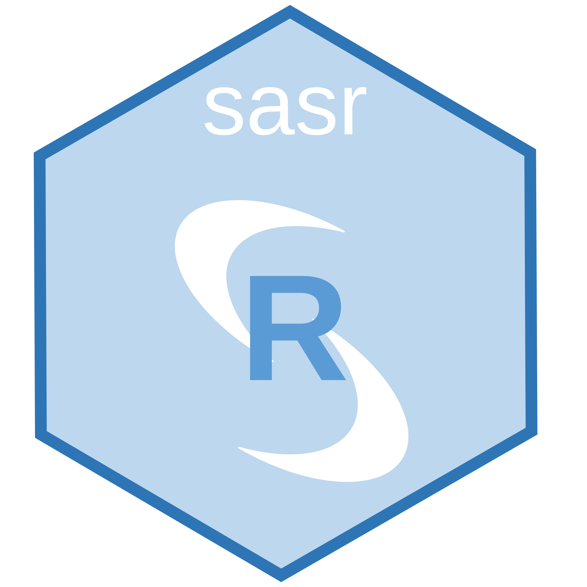

This package provides interface to SAS through saspy and reticulate.
Prerequisites
To use sasr, you need to make sure you have the following
- An SAS server that is accessible from the machine that you want to run
sasron - The machine that you want to run
sasrhas Python and Java
Installation
To install sasr, please use the following command
{r} remotes::install_github(repo = 'insightsengineering/sasr')
Reticulate will be installed automatically, but Python package saspy will not.
If you do not have Python, you can use the following code to install Python, or it can be installed automatically after you call some python related stuffs.
{r} library(reticulate) install_python()
To install saspy, use the following code
{r} library(sasr) install_saspy()
After the installation completes, you are ready to use sasr package.
FAQ
Q: Why use saspy instead of using ssh tunnels?
A: Although we can use ssh tunnels to transfer data and execute SAS commands, there are many restrictions: it only supports ssh connection. Using saspy, the official Python interface to SAS, we can enable all connection types, without reinventing the wheel, e.g. we can also connect to a local SAS installation with the same syntax, or connect to a remote SAS Viya through http. In addition, SAS sessions in saspy will not end until you terminate it (or encounter net work issues), it will be nice to execute multiple SAS code one by one, not necessarily putting them in one script and execute the whole script at once. Also, with the update of saspy over time, sasr will be easily extensible, to include functionalities other than transferring data and executing SAS code.